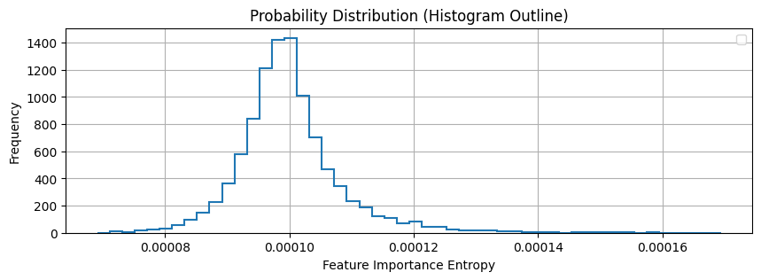
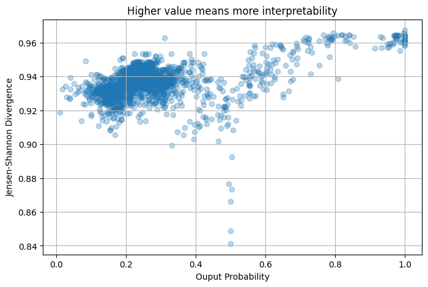
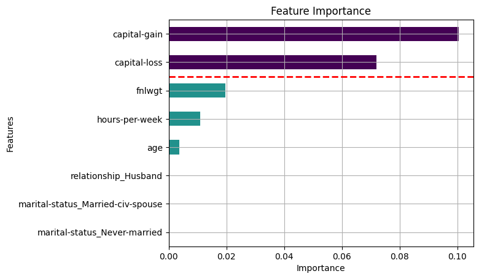
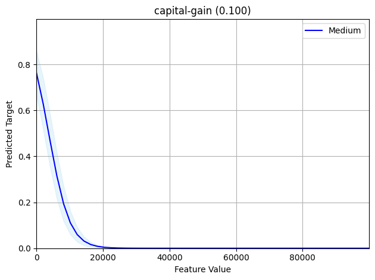
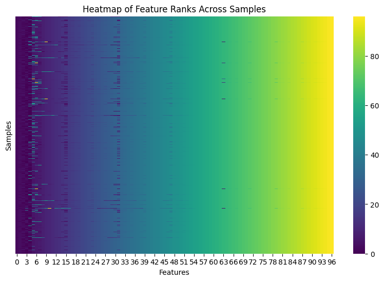

1. Regression#
1.1. Load Data and Train Model#
SHAP Metrics#
[1]:
import sys
sys.path.insert(0, "/home/cristian/holisticai/src")
[30]:
import numpy as np
import pandas as pd
from sklearn.datasets import fetch_openml
from sklearn.model_selection import train_test_split
from sklearn.linear_model import LassoCV
from sklearn.preprocessing import StandardScaler
from sklearn.utils import resample
from collections import Counter
def feature_rank_stability(local_importances):
"""
Calculates the rank stability (RSt) for a set of ranked features derived from local feature importances.
Args:
local_importances (np.array): A matrix of shape (M, d), where M is the number of samples
and d is the number of features. Each entry represents the importance of a feature in a sample.
Returns:
float: The rank stability (RSt) value between 0 and 1.
"""
# Convert local importances to rankings (higher importance gets a lower rank)
ranked_features = np.argsort(-local_importances, axis=1) # Sort each row in descending order, giving ranks
# Number of iterations
n = len(ranked_features)
# Flatten the ranked features list and get the unique features
unique_features = list(set([feature for iteration in ranked_features for feature in iteration]))
# Initialize a dictionary to store ranks for each feature
feature_ranks = {feature: [] for feature in unique_features}
# Populate ranks for each feature
for iteration in ranked_features:
for rank, feature in enumerate(iteration, start=1):
feature_ranks[feature].append(rank)
# Calculate rank stability for each feature
def rank_stability(feature_rankings):
if len(feature_rankings) == 1:
return 1.0 # If a feature is ranked only once, its stability is maximal
# Find the most frequent (consistent) rank
rank_counter = Counter(feature_rankings)
most_frequent_rank = rank_counter.most_common(1)[0][0]
# Calculate actual deviation (sum of absolute differences from the most frequent rank)
actual_deviation = sum(abs(rank - most_frequent_rank) for rank in feature_rankings)
# Calculate maximum deviation
max_deviation = len(feature_rankings) * (max(feature_rankings) - min(feature_rankings))
if max_deviation == 0:
return 1.0 # If there's no variation, stability is maximal
# Calculate and return rank stability
return 1 - (actual_deviation / max_deviation)
# Calculate overall rank stability for the system
overall_stability = np.mean([rank_stability(feature_ranks[feature]) for feature in unique_features])
return overall_stability
def feature_importance_stability(feature_importances):
"""
Calculate the stability of local feature importance (e.g., SHAP values).
Parameters:
- feature_importances (np.array): A matrix of shape (M, d), where M is the number of samples
and d is the number of features. Each entry represents the importance of a feature in a sample.
Returns:
- stability (float): The stability metric, bounded between 0 and 1.
"""
M, d = feature_importances.shape # M: number of samples, d: number of features
# Mean importance for each feature
mean_importances = np.mean(feature_importances, axis=0)
# Variance of the importance for each feature
var_importances = (M / (M - 1)) * np.var(feature_importances, axis=0, ddof=1) # ddof=1 for sample variance
# Calculate stability
stability_sum = 0
for j in range(d):
if mean_importances[j] == 0 or mean_importances[j] == 1:
stability_j = 0 # If mean is 0 or 1, it is perfectly stable for that feature.
else:
# Variance normalized by mean and (1 - mean)
stability_j = var_importances[j] / (mean_importances[j] * (1 - mean_importances[j]))
stability_sum += stability_j
stability = 1 - (1 / d) * stability_sum
# Ensure stability is within bounds
return max(0, min(1, stability))
[ ]:
#from sklearn.linear_model import LinearRegression
from sklearn.tree import DecisionTreeRegressor
from holistic.datasets import load_dataset
from sklearn.metrics import mean_squared_error
dataset = load_dataset('us_crime')
dataset = dataset.train_test_split(test_size=1000, random_state=42)
train = dataset['train']
test = dataset['test']
model = DecisionTreeRegressor()
model.fit(train['X'], train['y'])
mean_squared_error(test['y'], model.predict(test['X']))
Create a Custom Feature Importance Calculator#
[ ]:
from holistic.utils import RegressionProxy
from holistic.utils.feature_importances import compute_shap_feature_importance
from holistic.inspection import compute_partial_dependence
X = test['X']
proxy = RegressionProxy(predict=model.predict)
local_importances = compute_shap_feature_importance(X=X, proxy=proxy)
local_conditional_importances = local_importances.conditional()
importances = local_importances.to_global()
conditional_importances = local_conditional_importances.to_global()
ranked_importances = importances.top_alpha(0.8)
partial_dependencies = compute_partial_dependence(X, features=ranked_importances.feature_names, proxy=proxy)
y_pred = proxy.predict(X)
[42]:
importance_matrix = local_importances.data["DataFrame"].values
[ ]:
feature_importance_stability(importance_matrix), feature_rank_stability_from_importances(importance_matrix)
[ ]:
from holistic.explainability.metrics import regression_explainability_metrics
regression_explainability_metrics(importances=importances,
partial_dependencies=partial_dependencies,
conditional_importances=conditional_importances,
local_importances=local_importances)
[ ]:
from holistic.explainability.plots import plot_feature_importance
from holistic.explainability.plots import plot_partial_dependence
from holistic.explainability.plots import plot_local_importance_distribution
import matplotlib.pyplot as plt
fig,ax = plt.subplots(1,1, figsize=(5,10))
plot_feature_importance(importances, top_n=50, ax=ax)
[ ]:
from holistic.explainability.plots import plot_partial_dependence
from holistic.explainability.plots import plot_local_importance_distribution
plot_partial_dependence(partial_dependencies, ranked_importances, subplots=(4,3), figsize=(8, 8))
[ ]:
from holistic.explainability.plots import plot_local_importance_distribution
plot_local_importance_distribution(local_importances)
plt.show()
[ ]:
from holistic.explainability.plots import plot_predictions_vs_interpretability
plot_predictions_vs_interpretability(y_pred, local_importances)
plt.show()
3. Classification#
[3]:
from holistic.utils import BinaryClassificationProxy
from holistic.utils.feature_importances import compute_shap_feature_importance
from holistic.inspection import compute_partial_dependence
from numpy.random import RandomState
from sklearn.linear_model import LogisticRegression
from holistic.datasets import load_dataset
from sklearn.metrics import accuracy_score
import matplotlib.pyplot as plt
import numpy as np
import pandas as pd
[4]:
dataset = load_dataset(dataset_name="adult")
dataset = dataset.train_test_split(test_size=2000, random_state=42, stratify=dataset['y'])
train = dataset['train']
test = dataset['test']
model = LogisticRegression()
model.fit(train['X'], train['y'])
accuracy_score(test['y'], model.predict(test['X']))
[4]:
0.7925
[5]:
X = test['X']
proxy = BinaryClassificationProxy(predict=model.predict, predict_proba=model.predict_proba, classes=model.classes_)
local_importances = compute_shap_feature_importance(X=X, proxy=proxy)
local_conditional_importances = local_importances.conditional()
importances = local_importances.to_global()
conditional_importances = local_conditional_importances.to_global()
ranked_importances = importances.top_alpha(0.8)
partial_dependencies = compute_partial_dependence(train['X'], features=ranked_importances.feature_names, proxy=proxy)
y_pred = proxy.predict(X)
y_score = proxy.predict_proba(X)[:,1]
PermutationExplainer explainer: 2001it [00:31, 46.16it/s]
[6]:
from holistic.explainability.metrics import classification_explainability_metrics
classification_explainability_metrics(importances, partial_dependencies, conditional_importances, local_importances=local_importances)
[6]:
| value | reference | |
|---|---|---|
| metric | ||
| Alpha Importance Score | 0.020619 | 0.0 |
| XAI Ease Score | 0.750000 | 1.0 |
| Position Parity | 1.000000 | 1.0 |
| Rank Alignment | 1.000000 | 1.0 |
| Spread Ratio | 0.268362 | 0.0 |
| Spread Divergence | 0.078305 | 0.0 |
| Feature Stability | 0.949748 | 1.0 |
[14]:
from holistic.explainability.plots import plot_feature_importance
from holistic.explainability.plots import plot_partial_dependence
from holistic.explainability.plots import plot_local_importance_distribution
from holistic.explainability.plots import plot_predictions_vs_interpretability
plot_local_importance_distribution(local_importances)
plt.show()

[20]:
plot_predictions_vs_interpretability(local_importances.data['Metadata']['y_proba'], local_importances)
plt.show()

[12]:
from holistic.explainability.plots import plot_feature_importance
plot_feature_importance(importances, top_n=8)
[12]:
<Axes: title={'center': 'Feature Importance'}, xlabel='Importance', ylabel='Features'>

[13]:
from holistic.explainability.plots import plot_partial_dependence
class_index = 0
plot_partial_dependence(partial_dependencies, ranked_importances, class_idx=class_index)

[29]:
import seaborn as sns
import matplotlib.pyplot as plt
# Assuming ranked_features has the ranks (M samples x d features)
ranked_features = np.argsort(-local_importances.values, axis=1)
# Create a heatmap
plt.figure(figsize=(10, 6))
sns.heatmap(ranked_features, cmap='viridis', cbar=True, yticklabels=False)
plt.title("Heatmap of Feature Ranks Across Samples")
plt.xlabel("Features")
plt.ylabel("Samples")
plt.show()

Multi Classification#
[ ]:
from sklearn.ensemble import GradientBoostingClassifier
from holistic.datasets import load_dataset
from sklearn.metrics import accuracy_score
dataset = load_dataset(dataset_name="student_multiclass")
dataset = dataset.train_test_split(test_size=200, random_state=42, stratify=dataset['y'])
train = dataset['train']
test = dataset['test']
model = GradientBoostingClassifier()
model.fit(train['X'], train['y'])
accuracy_score(test['y'], model.predict(test['X']))
[ ]:
from holistic.utils import MultiClassificationProxy
from holistic.utils.feature_importances import compute_shap_feature_importance
from holistic.inspection import compute_partial_dependence
proxy = MultiClassificationProxy(predict=model.predict, predict_proba=model.predict_proba, classes=model.classes_)
local_importances = compute_shap_feature_importance(X=train['X'], proxy=proxy, max_samples=200)
local_conditional_importances = local_importances.conditional()
importances = local_importances.to_global()
conditional_importances = local_conditional_importances.to_global()
ranked_importances = importances.top_alpha(0.8)
partial_dependencies = compute_partial_dependence(test['X'], features=ranked_importances.feature_names, proxy=proxy)
y_pred = proxy.predict(test['X'])
[ ]:
from holistic.explainability.metrics import multiclass_explainability_metrics
multiclass_explainability_metrics(importances, partial_dependencies, conditional_importances, test['X'], y_pred, local_importances)
[ ]:
from holistic.explainability.plots import plot_feature_importance
plot_feature_importance(importances, top_n=30)
[ ]:
from holistic.explainability.plots import plot_partial_dependence
class_idx = 0 #1
plot_partial_dependence(partial_dependencies, ranked_importances, subplots=(3,4), figsize=(10,8), class_idx=class_idx)